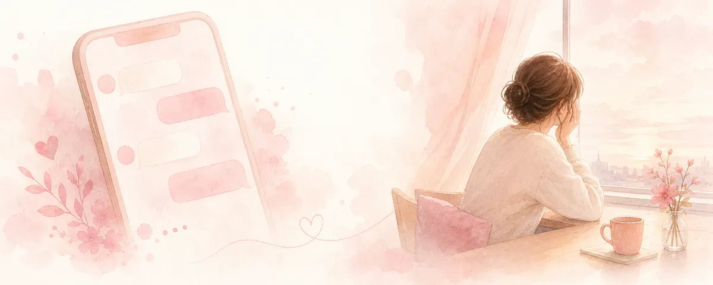

既読スルーされたら脈なし？追わない方がいい理由と次の一手

勇気を出して送ったメッセージが既読のまま。「嫌われた？」「もう脈なし？」と頭がいっぱいになりますよね。まず深呼吸して、一緒に整理しましょう。
既読スルー＝脈なし、ではない
返信がないのは事実ですが、その理由は分かりません。忙しい・言葉を選んでいる・タイミングを逃した——理由はさまざまです。「既読スルー＝嫌われた」は、まだ確かめられていない解釈です。事実（返信がない）と解釈（嫌われた）を分けるだけで、少し冷静になれます。
追うほど逆効果になりやすい理由
不安なときほど「毎日送る」「共通の友人から連絡してもらう」など、相手に圧をかけたくなります。けれど、返事がないのは相手の今の選択でもあります。返信を急かす・第三者を使う・連投する——こうした行動は、相手に「重い」と感じさせ、距離をさらに広げてしまうことが多いのです。
次の一手：連絡は「一度」、あとは相手に委ねる
おすすめは、連絡は自分から一度だけにとどめ、その後は相手の返答を尊重すること。「返ってきたら嬉しい、返ってこなければそれも答え」と、結果を相手に委ねる姿勢が、結果的にいちばん誠実で、あなたの心も守ります。
つらい気持ちは、別で受けとめる
「返事が来ない不安」を相手にぶつける代わりに、信頼できる人に話したり、書き出したりして整理しましょう。気持ちのケアと、相手への連絡は、分けて考えるのがコツです。
「待つべき？もう一度送るべき？」——迷いを電話で一緒に整理します。
あなたを否定せず、現実的に次の一手を考えます。
※本記事は一般的な情報提供です。相手の気持ちや結果を保証するものではありません。
← トップへ戻る